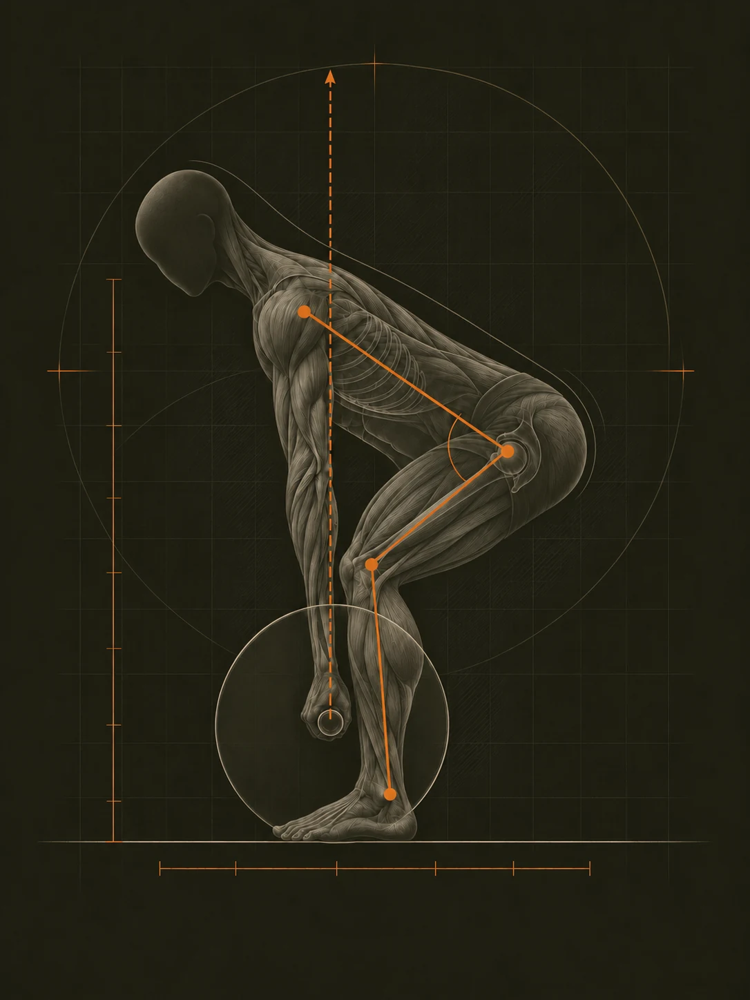
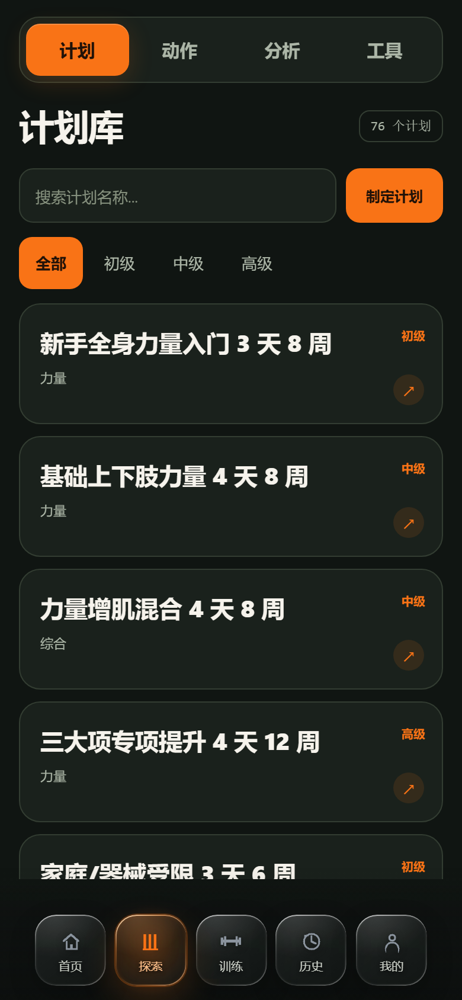
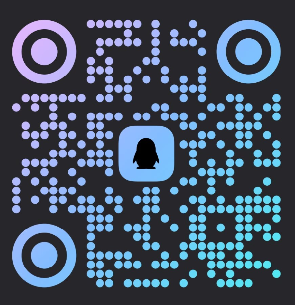

不同计划入口，共用一套运行逻辑
经典模板、自建计划和专项构建器最后都会进入相同的验证、激活和逐日执行流程。
专业力量训练计划系统 STRENGTH PLANNING SYSTEM
从计划编辑到逐日执行，逐组记录完成结果，再沉淀成动作统计与下一次安排。为认真训练的人与教练而做。

01/SYSTEM
TrainPhase 的核心不是一张训练表，而是一条能继续运行的数据链。
一条计划进入系统后，会经历五个明确的阶段。
经典模板、引导式定制、自建计划与专项构建器提供不同起点。
ENTRYBlock、周、训练日、动作 slot、组次、百分比或 RPE 在同一结构中验证。
STRUCTURE激活后形成独立计划实例，并记录当前阶段、周次和训练日。
INSTANCE计划处方进入训练页面，保存实际重量、次数、RPE 和完成状态。
EXECUTE动作统计、e1RM、疲劳解释和阶段衔接继续使用已完成训练，而不是覆盖过去。
LOOP / 闭环02/INTERFACE
切换模块并滚动界面。下面的截图来自线上正式版，不是概念效果图。

计划入口
01 / 06从 76 套计划模板开始，按目标与难度筛选；也可以直接制定自己的计划。
计划库是计划进入系统的起点；模板提供规则，激活后才会生成独立的运行实例。
03/CONTROL
可以从成熟模板开始，也可以深入到周期、训练日、强度规则和阶段衔接。系统负责校验，不替你隐藏关键决定。
经典模板、自建计划和专项构建器最后都会进入相同的验证、激活和逐日执行流程。
修改计划不会重写已经完成的训练。历史保存实际表现，下一次处方单独保存进阶结果。
在周期、周、训练日和动作处方之间切换，实时查看构建检查、周期负荷与总组数。所有结构修改都可撤销。
按动作汇总训练次数、完成组、总容量、e1RM 与 PR，并给出疲劳解释和下周建议。
积累、转化、实现和过渡不会静默切换。系统准备下一阶段，训练者确认后再继续。
04/AI BRIDGE
连接你常用的 AI 助手后，它可以读取你允许的训练信息，结合当前计划、训练进度和趋势给出建议。
读取当前计划、训练进度、主项重量和近期趋势，不需要反复手动描述。
可以帮你复盘训练、比较阶段表现，并准备计划修改建议。
敏感信息需要单独授权，修改计划只生成提案，确认后才会写入。
安装本机连接组件，再让 AI 助手发起第一次 TrainPhase 请求。
这台电脑 / Windows / 请求基础训练信息
现在可以在 AI 助手中询问你的训练情况。
04.1/SETUP
首次连接按下面的顺序完成，之后打开桌面 H5 并启动 AI 助手即可继续使用。
已适配的助手可由安装器配置，其他支持本地 stdio MCP 的客户端可以手动添加。
可一键配置 手动添加替换 Windows 用户名，保存后重启 OpenCode。
{
"$schema": "https://opencode.ai/config.json",
"mcp": {
"servers": {
"trainphase": {
"type": "local",
"command": [
"C:\\Users\\<你的用户名>\\AppData\\Local\\TrainPhase\\AIBridge\\TrainPhase-AI-Bridge.exe",
"mcp"
],
"environment": {
"TRAINPHASE_AGENT_NAME": "OpenCode"
}
}
}
}
}替换 Windows 用户名，保存后重启 CodeBuddy。
{
"mcpServers": {
"trainphase": {
"type": "stdio",
"command": "C:\\Users\\<你的用户名>\\AppData\\Local\\TrainPhase\\AIBridge\\TrainPhase-AI-Bridge.exe",
"args": ["mcp"],
"env": {
"TRAINPHASE_AGENT_NAME": "CodeBuddy"
}
}
}
}05/BOUNDARY
云同步、教练协作和外部 AI 助手都建立在明确告知与主动授权之上。
只申请完成当前功能所需的权限。
云同步与相关处理在启用前单独提示。
产品提供训练辅助，不替代医疗诊断。
当前版本按 18 岁以上使用场景设计。
使用浏览器构建计划、执行训练和查看历史。
iOS 与 Android 客户端入口已经预留。
06/CONTACT
微信与 QQ 是目前公开的联系方式。训练计划、产品反馈或合作，都可以从这里开始。
请使用微信扫码添加
点击二维码查看大图
请使用 QQ 扫码添加
点击二维码查看大图